Select versions to display:
Image
Transcription
Translation
Labanoff Image
Labanoff Transcription
Labanoff Translation
NB: The poems appear in different orders in these two versions so cannot be presented in alignment, side by side.
| Images | Transcription | Translation | Labanoff Images | Labanoff Transcription | Labanoff Translation |
|---|---|---|---|---|---|
| 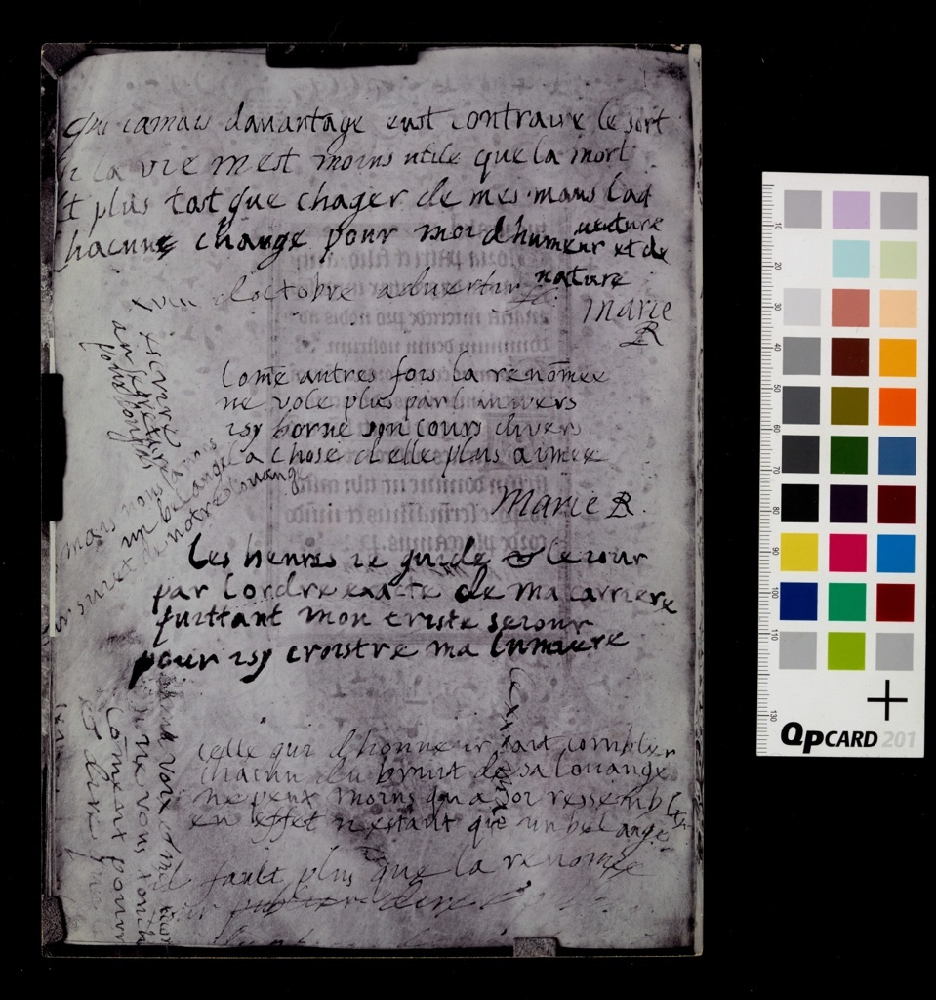 |
Qui iamais dauantage eust contraire le sort Si la vie mest moins utile que la mort Et plus tost que chager de mes maus laduenture Chacune change pour moi dhumeur et de nature Xviii doctobre aduertir fl: Marie R
Com[m]e autres fois la renom[m]ee ne vole plus par lunivers isy borne son cours divers la chose delle plus aimee Marie R
les heures ie guide et le iour par lordre exacte de ma carriere quittant mon triste seiour pour isy croistre ma lumiere
celle qui l’honneur sait combler chacun du bruit de sa louange ne peux moins qua soi ressembler en effet nestant que un bel ange
il faut plus que la renomee pour publier dire et publier
[Poems at Left Margin] mais nous auons un bel ange [po]ur suiet de notre louange
ma voix et mes accor si ne vous ton ils
Com[m]ent pourir et dire que |
Who ever had a more contrary lot? Since life is less meaningful to me than death, and rather than transforming my misfortunes each one changes my mood and my very being. 18 October to warn fl: Marie R
Now, as in the past, fame doesn’t fly across the universe. Its unpredictable course is confined here its most loved object. Marie R
I observe the hours and the day according to the precise requirements of my duty leaving my sad abode, here to increase my wisdom
She, who from honour knows how to gratify each one according to the noise of his praise, cannot be less like herself indeed being only a beautiful angel
It is better for the famous to speak first and publish later
[Poems at Left Margin] But we know a beautiful angel now the subject of our praise
If my voice and my good will Do not touch you
How… and to say that the |
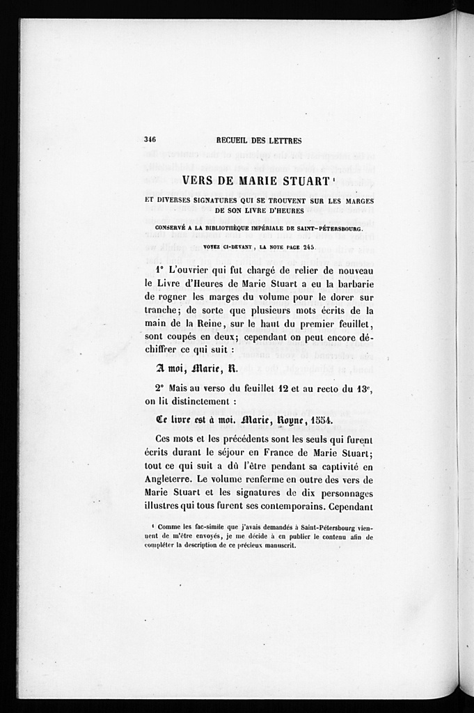 |
A moi, Marie.
Ce liure est à moi. Marie, Royne. | |
| 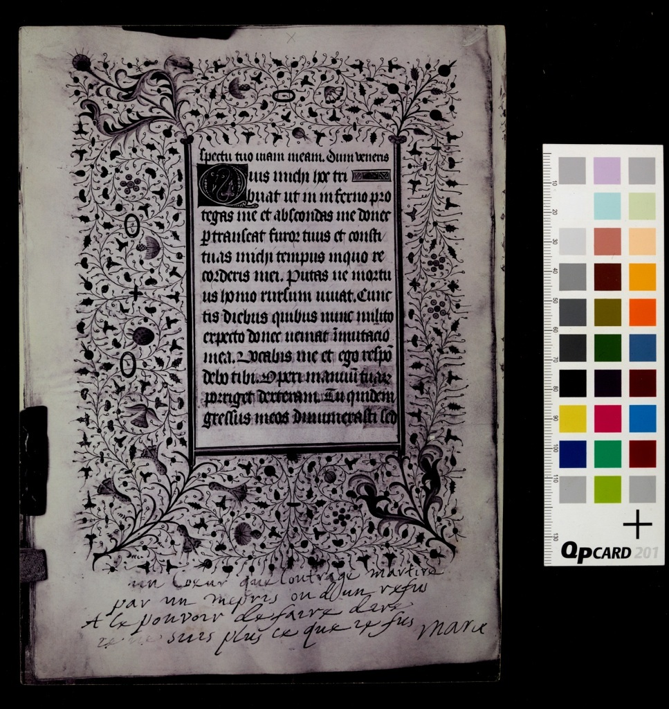 |
un Coeur que loutrage martire par un mepris ou dun refus A le pouvoir de faire dire ie ne suis plus ce que ie fus Marie |
A heart tormented by insults contempt or by a slight has the power to say: I am no longer what I was Marie |
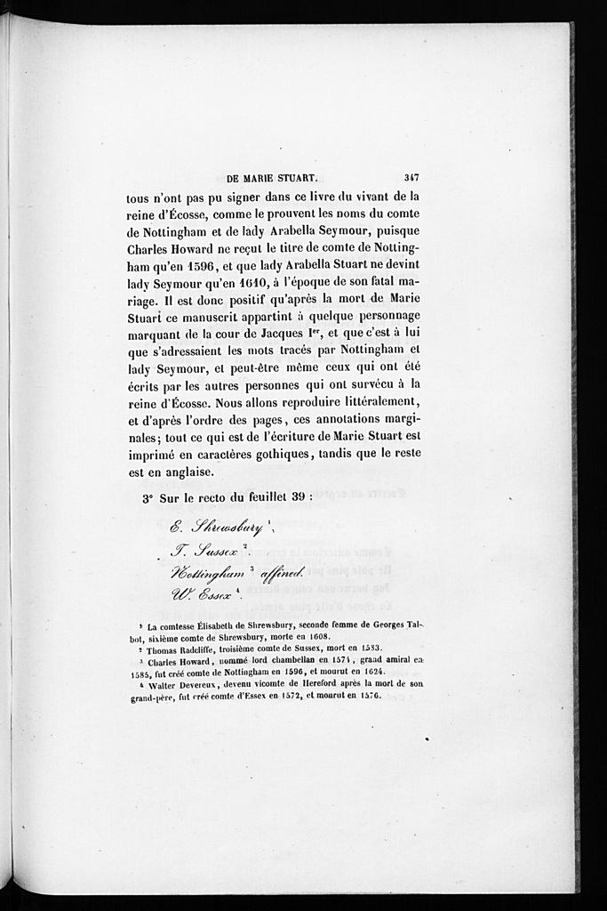 |
E. Shrewsbury T. Sussex Nottingham assined W. Essex | |
| 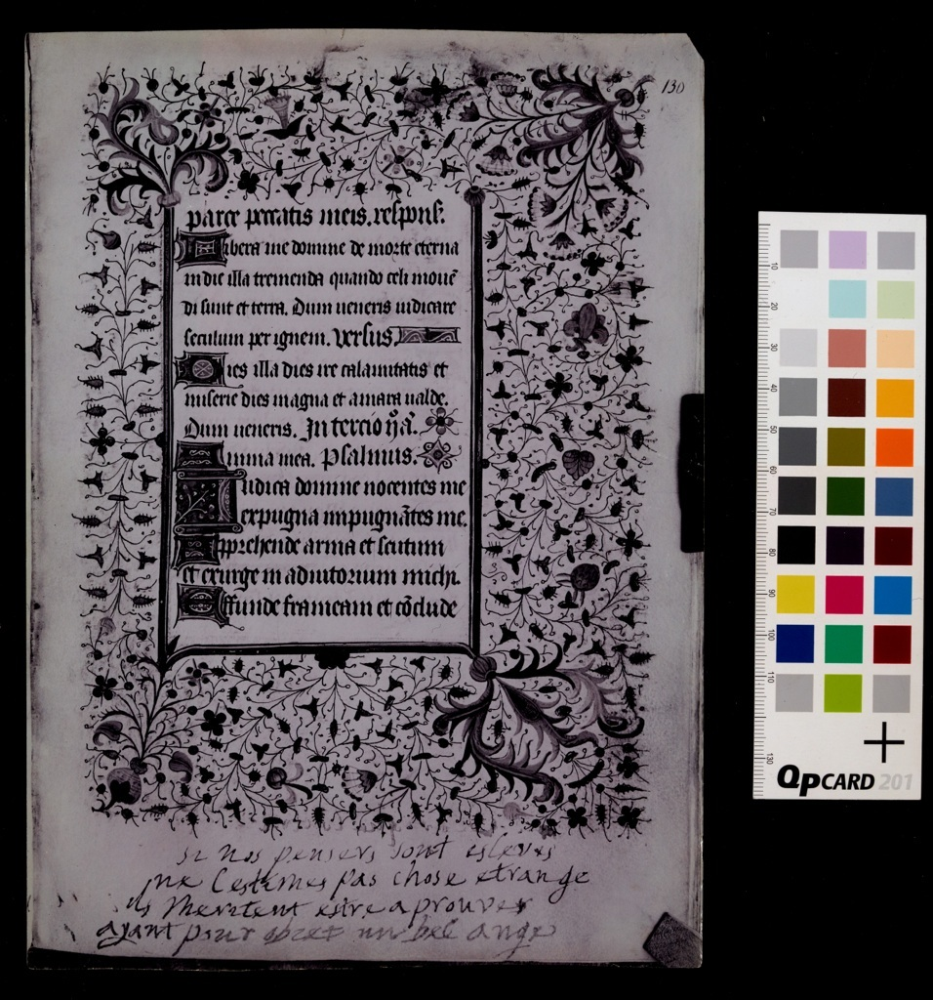 |
si nos pensers sont esleves ne lestimes pas chose estrange ils meritent ester a prouves ayant pour obiet un bel ange |
If our thoughts are on higher things Don’t judge them as strange; They deserve to be acknowledged, Having as their focus a beautiful angel |
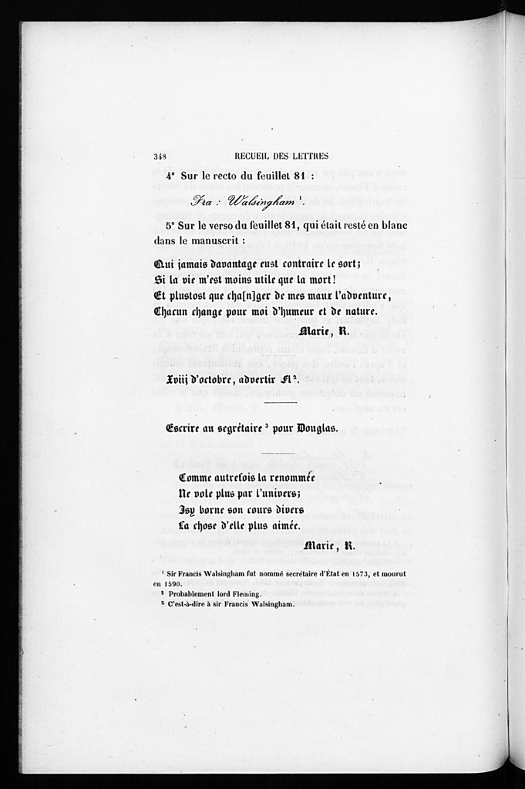 |
Fra: Walsingham
Qui iamias davantage eust contraire le sort; Si la vie mest moins utile que la mort! Et plus tost que cha[n]ger de mes maux ladventure, Chacun change pour moi d’humeur et de nature.
Xviii d’octobre aduertir Fl2
Comme autre fois la renommée Ne vole plus par lunivers; Isy borne son cours divers La chose d’elle plus aimée. Marie, R. | |
| 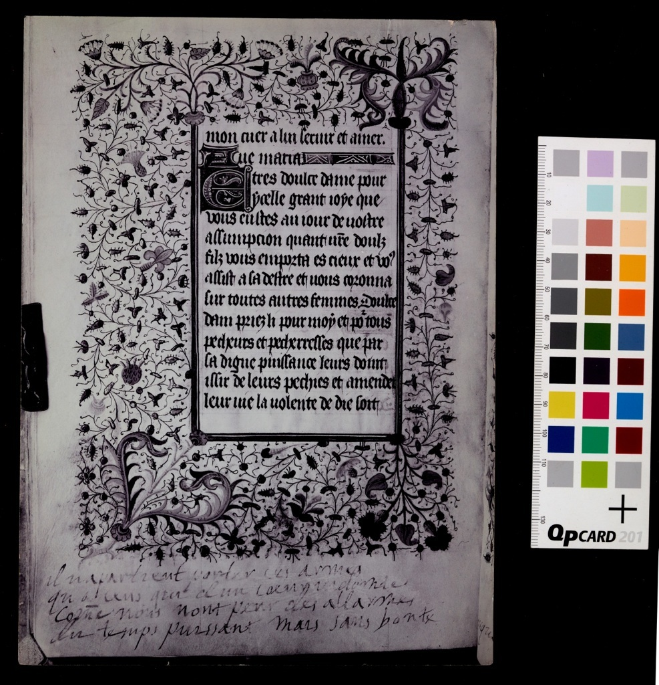 |
il napartient porter ces armes qua ceus qui dun coeur indomte com[me]e nous nont peur des allarmes du temps puissant mais sans bonte |
Only those with an indomitable spirit who have no fear of danger should carry the fight in these hard-hearted times |
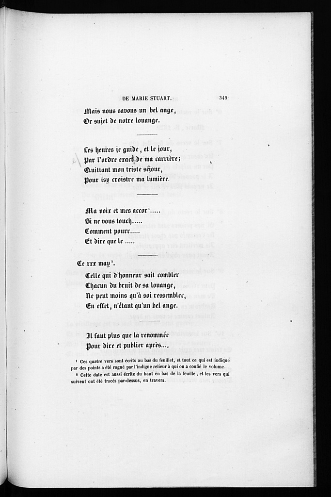 |
Mais nous savons un bel ange, Or sujet de notre louange.
Les heures je guide, et le jour, Par l’ordre exact de ma carriere; Quittant mon triste séjour, Pour isy croistre ma lumière.
Ma voix et mes accor…. Si ne vous touch…. Comment pourr….. Et dire que le ….
Ce xxx may. Celle qui d’honneur sait combler Chacun du bruit de sa louange, Ne peut moins qu’à soi ressemblee, En effet, n’étant qu’un bel ange.
Il faut plus que la renommée Pour dire et publier après…. | |
| 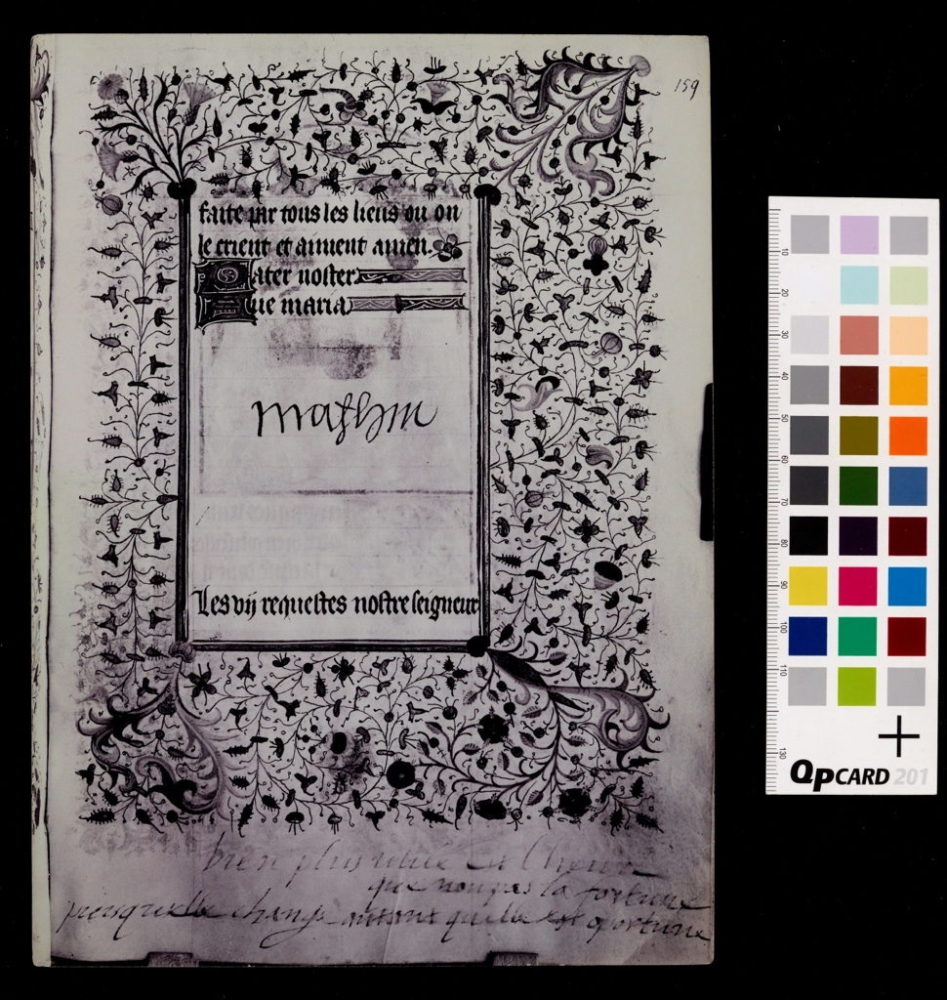 |
Mathiu
bien plus utile est l’heure que non pas la fortune puisquelle change autant quelle est opportune |
Matthew
Far more useful is the hour than fortune Since it changes as much as it is opportune |
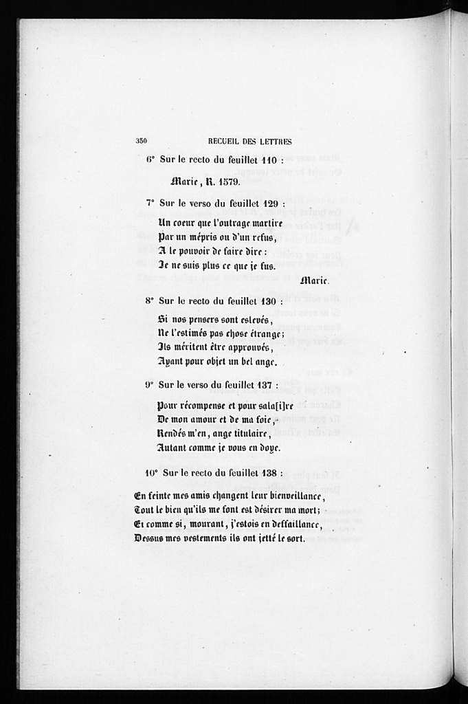 |
Marie, R. 1579.
Un coeur que l’outrage martire Par un mépris ou d’un refus, A le pouvoir de faire dire: Je ne suis plus ce que je fus. Marie.
Si nos pensers sont eslevés, Ne l’estimés paschose éstrange; Ils méritent être approuvés, Ayant pour objet un bel ange.
Pour recompense et pour sala[i]re De mon amour et de ma foi, Rendés m’en, ange titulaire, Autant comme je vous en doye.
En feinte mes amis changent leur bienveillance, Tout le bien qu’ils me font est desirer ma mort; Et comme si, mourant, j’estois en deffaillance, Dessus mes vestements ils ont jetté le sort. | |
| 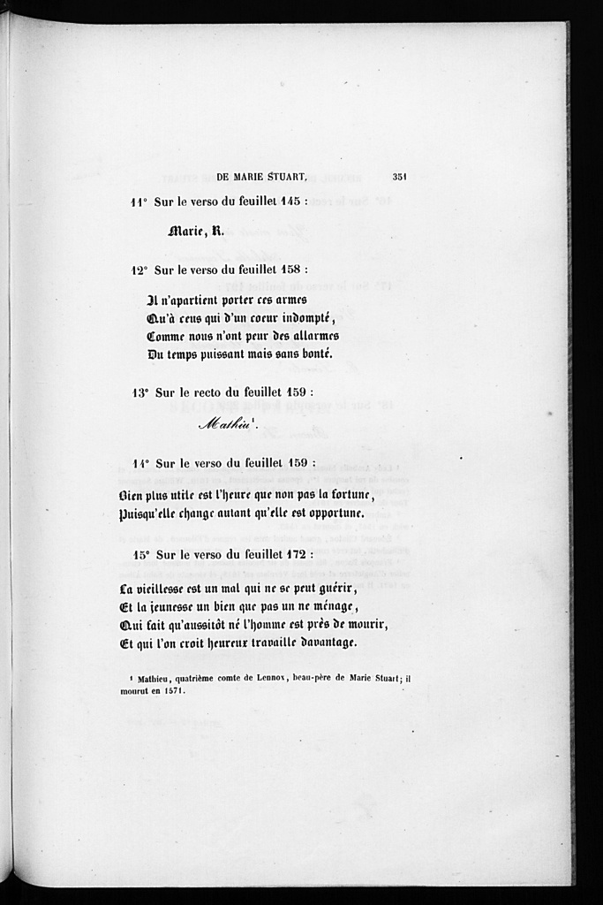 |
Marie, R.
iI n’apartient porter ces armes Qu’à ceus qui d’un coeur indompté, Comme nous n’ont peur des allarmes Du temps puissant mais sans bonté.
Mathiu
Bien plus utile est l’heure que non pas la fortune, Puisqu’elle change autant qu’elle est opportune.
La viellesse est un mal qui ne se peut guérir, Et la jeunesse un bien que pas un ne ménage, Qui fait qu’aussitôt né l’homme est près de mourir, Et qui l’on croit heureux travaille advantage. |
Far more useful is the hour than fortune Since it changes as much as it is opportune.
Old age is a sickness without cure and youth is a blessing without care Immediately man is born he is near death Successful is the contented life. |
|||
| 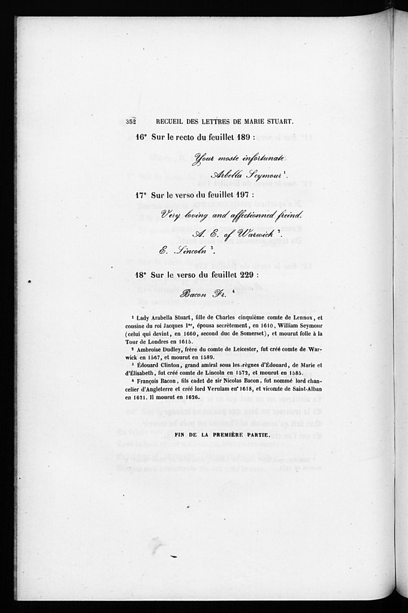 |
Your most infortunate Arbella Seymour.
Very loving and affectionned freind A. E. of Warwick E. Lincoln
Bacon Fr. |
{kind=link}
{kind=link}
{kind=link}
{kind=link}
{kind=link}
{kind=link}
{kind=link}
{kind=link}
{kind=link}
{kind=link}
{kind=link}
{kind=link}